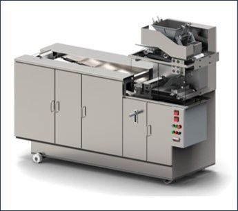
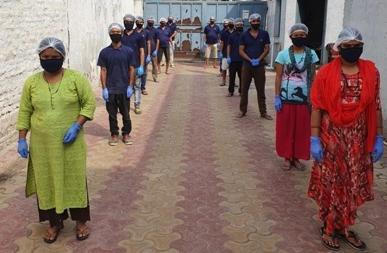

Everyone loves to eat Rotis when someone else makes them
Roti Making Machine
We are basically engineers by profession, so we design our own automation for RF.
Roti Factory is part of the umbrella brand of KM Group, which have offices located in Delhi, Rajasthan & Uttarakhand. We have installed Roti making machines manufactured by the KM Group. Our machines are designed and developed under numerous patents in India. Our machines are manufactured with high quality Food Grade materials such as Stainless Steel, Aluminium & PTFE (Teflon). The machines are an integral part of our family of KM Group, hence we have a robust and strict control over quality & performance of the same. We ensure our maintenance team knows the job well and are employed on a regular basis to ensure zero breakdown for our production unit.
Few Critical Points
- Machine parts that come in contact with Rotis are made up of food grade stainless steel, aluminium or teflon. Also, we ensure that these parts are replaced before the end of the lifespan in order to not affect the quality of our Rotis
- All the electrical components installed on the machines are standard & provided by reputable companies in India
- Hydraulic systems, motors, temperature controller, etc are all sourced from reputable brands such as Bosch, Bonfiglioli, Selec, etc.
- Use PNG for heating & temperature is automatically maintained to provide consistent quality of Rotis
For more queries / questions, please visit www.chapatiqueen.com to see our latest models of kitchen equipments.


Roti Factory
Operating out of Udyog Vihar, Roti Factory is spread over 5,000 sft of production area.
Roti Factory was established in 2014 as a sister concern of the already established KM Foods (2006). Initial operations were setup in Rangpuri, Delhi and a second production plant was setup in Gurugram in early 2018. We are a leading supplier of Rotis in bulk in Delhi NCR since 2014.
We take immense pride in our USP, which is Safety of our staff & plant at all times, Quality Rotis every time and ensuring the Deliveries to our clients happen on-time. Some of the key highlights undertaken to maintain our USP are briefly mentioned below:
- Our plant is run on PNG, which is made available to us through gas pipeline from 'Haryana City Gas'. This ensures safety for our plant as it eliminates the risk of handling LPG cylinders
- Our machinery has covers that ensure that the moving / mechanical parts are not exposed to the staff
- Our staff is encouraged to carry out all activities of the day keeping "Safety" in mind
- Our plant is established according to the latest management standards to provide hygienic & premium quality Rotis
- All processes are undertaken according to the standards laid out in ISO & HACCP to ensure safe & smooth operations
- All requisite certification is available, such as FSSAI, Shop & Establishment Act, PF Act, ESI Act, etc.
- Our delivery team is comprised of 3 EECO cargo & 2 bikers. Their vehicles are checked properly and our supervisors ensure they carry the necessary documents by the law.
Quality Assurance
All processes are documented to keep a strict control over the quality parameters.
All our teams, production, packaging, delivery, client-management & house-keeping have a common goal in mind - Quality Assurance. Some of the key highlights undertaken to maintain our quality standards are briefly mentioned below:
- Compliance - we have site-specific FSSAI license and medical certificate for our employees
- Infrastructure - visitor policy maintained, premise is adequately lit, well ventilated, overall cleanliness is maintained
- Personal Hygiene - staff maintains high degree of personal hygiene and no jewellery policy is followed
- Waste Disposal - swing operated waste bins are installed, with liners for the waste bins
- Procurement of Raw Materials - all raw materials procured are in accordance with the FSSAI labelling requirement
- Food Contact Surface - cleaned using industrially approved chemicals
- Pest Control measures - done by "Rentokil-PCI" on a weekly basis as part of an annual contract
- Storage of Raw Materials - clean storage area, free from pests and FIFO & FEFO are followed
- Management, Supervision & Training - customer complaints mechanism in place, regular training to staff provided
- Medical Facility - staff is enrolled with ESI for long term medical benefits, also fully equipped first aid kit available on site
- Testing reports - bi-annual testing of water & Roti done through a reputed testing lab
- Standard Operating Procedure - detailed SOPs for all steps in Roti processing are in place to ensure proper management

Equipment & Raw Materials
We use the highest grade raw materials and install the best equipment for our processes.
All the raw materials & equipment used / installed are food grade certified. We use premium wheat flour, oils, RO water as raw materials for the production of Rotis. Some of the key highlights of our Raw Materials / Equipment are briefly mentioned below:
- Raw Materials - wheat flour is sourced from a reputable brand with a modern plant adhering to all necessary quality protocols. The Wheat Flour is obtained as per the FSSAI norms
- Potable water - 2 RO systems installed with a combined capacity of 500 ltrs / hour. Regular service schedules are in place to ensure the machines work efficiently. Also, our water is tested twice in a year for micro-biological parameters. Certificates available
- Packaging Material - we use food grade butter paper and 51 microns LDPE food grade bags. Certificates available. We use a pouch sealer, which makes a better sealed pouch
- Storage Equipment - we use plastic pallets with a minimum height of 6" from the ground to stack up our wheat flour bags. For other raw material, all FSSAI laid norms are followed to store, use & label. Also, FIFO & FEFO are followed
- Quality Testing - we use weighing machines that are calibrated. Our temperature controllers are tested and calibrated, and issued a certificate once a year. Also, a metal detector is used before Roti delivery, and it can detect piece of metal, if any.
Staff Training
We have a bi-monthly training session for our staff for quality, team-work & soft skills.
We use an in-house trainer who provides training to our staff twice in a month. She is a certified trainer and takes 2 sessions of 1.5 hours each every fortnight. The topics that she focusses on are as highlighted below:
- Accountability - important aspect in a production job is to maintain accountability that gives a better control over the production
- Team work - our dedicated staff works best when they work in a team and understand the importance of team-work
- Quality Parameters - it's very important to sensitize our staff to the need of a hygienic product in the food industry
- Maintenance Jobs - monthly schedule of training our maintenance staff - done by professional technicians from KM Group
